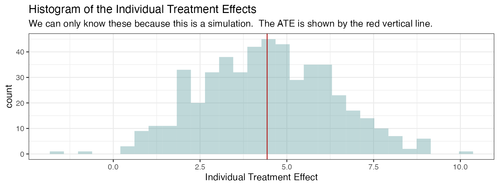

Doubly Robust Estimation
Source:vignettes/articles/Doubly-Robust-Estimation.Rmd
Doubly-Robust-Estimation.RmdOne of the central tasks of causal inference is the estimation of average treatment effects. There are many approaches to doing this, but one of particular importance is that of doubly robust estimation.
The following article provides example code for how to create a
doubly robust estimator of an average treatment effect (ATE) using
nadir::super_learner().
Background
For some useful references on doubly robust estimation, we refer the curious reader to:
- Kang, J. D. Y., & Schafer, J. L. (2007). Demystifying Double Robustness: A Comparison of Alternative Strategies for Estimating a Population Mean from Incomplete Data. Statistical Science, 22(4). https://doi.org/10.1214/07-sts227
- Fine Point 13.2 and Technical Point 13.2 of Hernán MA, Robins JM (2020). Causal Inference: What If. Boca Raton: Chapman & Hall/CRC https://miguelhernan.org/whatifbook
- Funk, M. J., Westreich, D., Wiesen, C., Stürmer, T., Brookhart, M. A., & Davidian, M. (2011). Doubly Robust Estimation of Causal Effects. American Journal of Epidemiology, 173(7), 761–767. https://doi.org/10.1093/aje/kwq439
- Bang, H., & Robins, J. M. (2005). Doubly Robust Estimation in Missing Data and Causal Inference Models. Biometrics, 61(4), 962–973. https://doi.org/10.1111/j.1541-0420.2005.00377.x
- Zivich, P. N., & Breskin, A. (2021). Machine Learning for Causal Inference: On the Use of Cross-fit Estimators. Epidemiology, 32(3), 393–401. https://doi.org/10.1097/ede.0000000000001332
For a very informal, but introductory explanation, the StitchFix tech blog Multithreaded has a very nice article here:
- Nettiksimmons, J. & Davies, M. (2021). Gimme a robust estimator - and make it a double! https://multithreaded.stitchfix.com/blog/2021/07/23/double-robust-estimator/
In particular, the following paragraph from Zivich and Breskin nicely
summarizes why it is important to use a doubly robust estimator if using
machine learning algorithms and/or cross-fit estimators like those from
nadir::super_learner():
The need for doubly-robust estimators with cross-fitting when using data-adaptive machine learning for nuisance function estimation arises from two terms in the Von Mises expansion of the estimator. The first term, which is described by an empirical process term in the expansion, can be controlled by either restricting the complexity of the nuisance models (e.g., by requiring them to be in the Donsker class) or through cross-fitting. Because it can be difficult or impossible to verify that a given machine learning method is in the Donsker class, cross-fitting provides a simple and attractive alternative. The second term is the second-order remainder, and it converges to zero as the sample size increases. For valid inference, it is desirable for this remainder term to converge as a function of n−1/2, referred to as as root-n convergence. Convergence rates are not a computational issue, but rather a feature of the estimator itself. Unfortunately, data-adaptive algorithms often have slower convergence rates as a result of their flexibility. However, because the second-order remainder term of doubly-robust estimators is the product of the approximation errors of the treatment and outcome nuisance models, doubly-robust estimators only require that the product of the convergence rates for nuisance models be n−1/2. To summarize, cross-fitting permits the use of highly complex nuisance models, while doubly-robust estimators permit the use of slowly converging nuisance models. Used together, these approaches allow one to use a wide class of data-adaptive machine learning methods to estimate causal effects.
Constructing an Example Dataset
We will create a synthetic dataset in which we model the effect of an active drug (treatment) vs. placebo (control) on a generic health outcome. Additionally, in our simulated data, the treatment assignment mechanism to the drug arm will not be completely random, but rather dependent on some observed covariates (for example, age and income). This could reflect either an observational setting where participants self-selected into the treatment arms, or a randomized setting, but where the assignment into arms was designed by investigators to (stochastically) rely on age and income.
library(dplyr)
library(tibble)
library(ggplot2)
library(patchwork)
library(nadir)
sample_size <- 500 # sample size for the simulation dataset
# the simulation dataset has the following properties:
# the A->Y is confounded by the L->A and L->Y pathways;
#
# Y_observed is the "coarsened" or observed one of the two
# potential outcomes Y(0) and Y(1).
#
# Y(0) and Y(1) are constructed as the output of a baseline
# mean model given L1 and L2 (mu) and a heterogeneous treatment
# effect (tau), again given L1 and L2
df <-
tibble::tibble(
# ages are taken to be between 30 and 50
L1_age = sample(x = seq(30, 50), size = sample_size, replace = TRUE),
# household income is centered around $35,000, with a floor of $5,000
L2_income = rlnorm(n=sample_size, meanlog = log(30000), sdlog = log(3)) + 5000,
# Treatment mechanism: logit depends on age and (log) income
A_treatment = rbinom(
n = sample_size,
size = 1,
prob = plogis(-6 + 0.6 * (L1_age - 40) + 4 * log(L2_income / 40000))
),
# Outcome model components: baseline mu(L) and heterogeneous effect tau(L)
mu = 50 + 0.15 * (L1_age - 40) - 2.5 * log(L2_income / 40000),
tau = 4 + 0.05 * (50 - L1_age) + 1.2 * log(L2_income / 40000),
# Potential outcomes and observed outcome
`Y(0)` = rnorm(sample_size, mean = mu, sd = 1),
`Y(1)` = rnorm(sample_size, mean = mu + tau, sd = 1),
Y_observed = dplyr::if_else(A_treatment == 1L, `Y(1)`, `Y(0)`)) |>
dplyr::select(-mu, -tau)Visualizing Confounding in the Dataset
Below we visualize how the treatment-assignment and treatment effect on the outcome are confounded by the age and income covariates.
Intuitively, the way to understand the problem this confounding poses to estimating an average treatment effect is as follows:
- Under a completely randomized regime, we’d like to be able to simply compare the treated to the placebo arm in their outcomes.
- However, the people in the treated arm are systematically different (in a distributional sense) from the people in the placebo arm. They are higher in income and age, on average.
- As a result, any good estimator for the average treatment effect should take this systematic difference into account.
default_theme <- theme_bw()
p1 <- ggplot(df, aes(x = L1_age, y = A_treatment)) +
geom_jitter(height = 0.025, width = 0.25, alpha = 0.1) +
stat_smooth(formula = "y ~ x", method = "glm",
method.args = list(family="binomial"), se = FALSE) +
default_theme +
ggtitle(expression(Age %->% Treatment))
p2 <- ggplot(df, aes(x = L2_income, y = A_treatment)) +
geom_jitter(height = 0.025, width = 0.25, alpha = 0.1) +
stat_smooth(formula = "y ~ x", method = "glm",
method.args = list(family="binomial"), se = FALSE) +
default_theme +
scale_x_log10(labels = scales::dollar_format()) +
ggtitle(expression(Income %->% Treatment))
p3 <- ggplot(df, aes(x = L1_age, y = Y_observed)) +
geom_jitter(width = 0.25, height = 0.025, alpha = 0.1) +
geom_smooth(se = FALSE) +
default_theme +
ggtitle(expression(Age %->% Outcome))
p4 <- ggplot(df, aes(x = L2_income, y = Y_observed)) +
geom_point(alpha = 0.1) +
geom_smooth(se = FALSE) +
default_theme +
scale_x_log10(labels = scales::dollar_format()) +
ggtitle(expression(Income %->% Outcome))
patchwork <- { p1 | p2 } / { p3 | p4 }
patchwork + plot_annotation(
title = "Evidence of Confounding",
subtitle =
expression(paste(
"The following four relationships are visualized: ",
list(L[1], L[2] %->% A, L[1], L[2] %->% Y)
)),
theme = theme(plot.title = element_text(size = 18))
) &
theme(text = element_text(size = 10))
#> `geom_smooth()` using method = 'loess' and formula = 'y ~ x'
#> `geom_smooth()` using method = 'loess' and formula = 'y ~ x'Determine the True Average Treatment Effect
Since the data are simulated including both poptential outcomes and , we are able to obtain the average treatment effect for this population as a simple average of the individual treatment effects. Normally, this is not possible in the real world, because we cannot assign both treatment and placebo to the same individuals in order to observe both potential outcomes.
# the true average treatment effect
true_ate <- mean(df$`Y(1)` - df$`Y(0)`)
print(paste0("True ATE: ", round(true_ate, 2)))
#> [1] "True ATE: 4.43"
# visualize the individual treatment effects
ggplot(df, aes(x = `Y(1)` - `Y(0)`)) +
geom_histogram(fill = 'cadetblue', alpha = 0.4) +
geom_vline(xintercept = true_ate, color = 'firebrick') +
default_theme +
xlab("Individual Treatment Effect") +
ggtitle(
"Histogram of the Individual Treatment Effects",
subtitle = paste0(
"We can only know these because this is a simulation. The ATE is shown by the red vertical line."))
#> `stat_bin()` using `bins = 30`. Pick better value with `binwidth`.
So this number, 4.43, is what we’re looking to estimate with our
doubly robust code below, and without knowledge of Y(1) and
Y(0) but instead only of Y_observed.
Fitting the Outcome and Propensity Score Models
As a reminder, the outcome model refers to the model of the outcome given the treatment received and covariates, while the propensity score refers to the probability of receiving treatment given the covariates.
In mathematical notation, we denote these as
and
The above refer to the true outcome model and propensity score models, but when we estimate them from the data using an algorithm, we refer to the estimated models as and .
Note that in the real world, we don’t get to see both
and
– we only get to see the observed outcome, which is
.
As such, we’ll drop the values Y(1) and Y(0)
from the dataset so we don’t risk accidentally making any use of them in
our estimation procedure.
Now we’re ready to fit outcome and propensity score models to the
data. To be as flexible as possible, we will use
nadir::super_learner() with a variety of different
learners.
outcome_model <- super_learner(
data = df,
formulas = list(
.default = Y_observed ~ L1_age + L2_income + A_treatment,
gam = Y_observed ~ s(L1_age, L2_income) + A_treatment),
learners = list(
mean = lnr_mean,
lm = lnr_lm,
earth = lnr_earth,
rf = lnr_rf,
gam = lnr_gam,
hal = lnr_hal
),
verbose = TRUE)
propensity_model <- super_learner(
data = df,
formulas = list(
.default = A_treatment ~ L1_age + L2_income,
gam = A_treatment ~ s(L1_age, L2_income)),
learners = list(
mean = lnr_mean,
logistic = lnr_logistic,
rf = lnr_rf_binary,
earth = lnr_earth,
xgboost = lnr_xgboost,
gam = lnr_gam,
hal = lnr_hal),
extra_learner_args = list(
earth = list(glm = list(family='binomial')),
xgboost = list(param = list(objective = 'binary:logistic')),
gam = list(family = binomial),
hal = list(family = 'binomial')
),
outcome_type = 'binary',
verbose = TRUE
)There are details about the fit available when using the
verbose = TRUE option that allow us to see which learners
were favored, and how they performed:
# learner weights
round(outcome_model$learner_weights, 2)
#> mean lm earth rf gam hal
#> 0.00 0.00 0.11 0.05 0.66 0.18
round(propensity_model$learner_weights, 2)
#> mean logistic rf earth xgboost gam hal
#> 0.00 0.00 0.22 0.00 0.00 0.58 0.21
# compare learners by their loss metric
compare_learners(outcome_model)
#> Inferring the loss metric for learner comparison based on the outcome type:
#> outcome_type=continuous -> using mean squared error
#> # A tibble: 1 × 6
#> mean lm earth rf gam hal
#> <dbl> <dbl> <dbl> <dbl> <dbl> <dbl>
#> 1 8.01 3.67 1.20 1.83 1.15 1.44
compare_learners(propensity_model)
#> Inferring the loss metric for learner comparison based on the outcome type:
#> outcome_type=binary -> using negative log loss
#> # A tibble: 1 × 7
#> mean logistic rf earth xgboost gam hal
#> <dbl> <dbl> <dbl> <dbl> <dbl> <dbl> <dbl>
#> 1 194. 84.2 85.6 95.0 148. 75.3 81.4Doubly Robust Estimation and Inference
Now that we’ve fit our outcome model and our propensity score model , we can proceed with constructing a doubly robust estimate of the average treatment effect.
There are several different doubly robust estimators of the ATE, but here we will use the one-step estimator. The one-step estimator of the ATE has the following form:
is an asymptotically linear estimator, meaning it admits the following asymptotic representation as a linear sum plus a term decaying to 0 in probability: In the above equation, is the true ATE, is the efficient influence function, and is
Because is asymptotically linear, we can use the efficient influence function to construct asymptotically valid confidence intervals. More specifically, the following asymptotic result allows us to estimate valid asymptotic confidence intervals.
Some useful references on efficient influence function based inference are
- Hines, O., Dukes, O., Diaz-Ordaz, K., & Vansteelandt, S. (2022). Demystifying Statistical Learning Based on Efficient Influence Functions. The American Statistician, 76(3), 292–304. https://doi.org/10.1080/00031305.2021.2021984
- Kennedy, E. H. (2022). Semiparametric doubly robust targeted double machine learning: a review (Version 2). arXiv. https://doi.org/10.48550/ARXIV.2203.06469
- Fisher, A., & Kennedy, E. H. (2020). Visually Communicating and Teaching Intuition for Influence Functions. The American Statistician, 75(2), 162–172. https://doi.org/10.1080/00031305.2020.1717620
A <- df$A_treatment
Y <- df$Y_observed
# get components of propensity scores
pi_hat_of_L <- propensity_model$sl_predictor(df)
one_minus_pi_hat_of_L <- 1-pi_hat_of_L
# get outcome predictions
m_of_0_exposure_and_L <- # counterfactual model, everyone untreated
outcome_model$sl_predictor({ df |> mutate(A_treatment = 0) })
m_of_1_exposure_and_L <- # counterfactual model, everyone treated
outcome_model$sl_predictor({ df |> mutate(A_treatment = 1) })
m_of_A_and_L <- outcome_model$sl_predictor(df) # outcome model for treatment received
# these are the components of the uncentered EIF
uncentered_EIF <- m_of_1_exposure_and_L - m_of_0_exposure_and_L +
(A/pi_hat_of_L - (1-A)/(1- pi_hat_of_L)) * (Y - m_of_A_and_L)
# we use the uncentered EIF to estimate theta_hat
# this can be thought of as solving the estimating equation
# uncentered_EIF - theta_0 = 0
theta_hat <- mean(uncentered_EIF)
# center the efficient influence function
EIF <- uncentered_EIF - theta_hat
# in order to conduct inference, we can use the influence curve of the
# estimator and take its variance divided by n
theta_hat_variance_estimate <- var(EIF)/nrow(df)
# calculate confidence intervals
ATE_ConfidenceIntervals <- theta_hat + qnorm(c(0.025, 0.975)) * sqrt(theta_hat_variance_estimate)
# format the results
formatted_CI <-
# sprintf(fmt = "%.2f", ...) formats a numeric to a string that has two digits
# past the decimal, even if there are trailing zeroes. round(0.4, 2) evaluates
# to "0.4", while sprintf(fmt = "%.2f", 0.4) evaluates to "0.40".
paste0("(", paste0(sprintf(fmt = "%.2f", round(
ATE_ConfidenceIntervals, 2
)), collapse = ', '),
")")
# print the results
cat(paste0(
"ATE Estimate: ", sprintf(fmt = "%.2f", round(theta_hat, 2)), "\n",
"Confidence Intervals: ", formatted_CI, "\n"))
#> ATE Estimate: 4.48
#> Confidence Intervals: (4.33, 4.63)Conclusions
It looks like our estimate 4.48 is quite close to the true value, 4.43, which is great! Moreover, the truth easily lies within the confidence interval produced (4.33, 4.63).
What is truly remarkable about this approach, as you can read about
in the references listed throughout this article, is that by
cross-fitting our nuisance models (as in, via
nadir::super_learner()) and using a doubly robust
estimator, we are able to avoid problems related to the curse of
dimensionality in machine learning algorithms (i.e., what is often
called regularization bias or overfitting bias) and are able to produce
consistent estimates of causal parameters with asymptotically valid
confidence intervals under relatively mild assumptions.
If you want to keep going with nadir::super_learner()
for causal inference, natural subsequent directions are to use it with
other causal parameters besides the ATE, like the average treatment
effect among the treated, instrumental variables estimands, mediational
quantities like direct/indirect effects, heterogeneous treatment
effects, or continuous treatment effects like modified treatment policy
effects, and more.